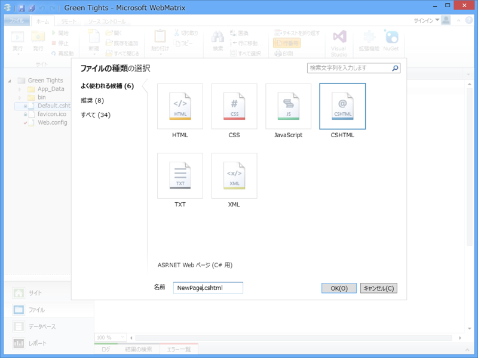

WebMatrix 3 で Wiki クローンを作る vol.1
公開日：
前回（WebMatrix 3 で Wiki クローンを作る vol.0 - だるろぐ）からすでに1ヶ月たちましたが、だいたいこんなペースで、気が向いたときにやっていくと思います。すまんやで！
さて、今回はデータの読み書きです。Wiki と言えば、データはテキストとして保存するるタイプが多いんですかね？ まぁ、それでもいいんですけど、WebMatrix では SQL Server Compact Edition（SQL CE と略されることが多いです）が簡単に扱えるので、それを利用したいと思います。
SQL CE というのは Microsoft SQL Server 兄弟の末弟で、SQLite みたいにポータブルに扱えるタイプのデータベースです。ちなみに、WebMatrix はそのお兄さん（SQL Server）や、お兄さんのライバル（MySQL）なんかともなかよくできるのですけれど、ああいうのはインストールとかセッティングとかメンテナンスとか面倒ですよね。その点、SQL CE はデータベースファイルをひとつポンと作るだけなので楽ちんです。ちなみに、タダ。
データベースの作成

WebMatrix でデータを扱うには、［データベース］というワークスペースを選択します。

では、さっそくデータベースを作りましょう。データベースのファイル名はなんでもいいです。今回はプロジェクト名そのままの“Green Tights.sdf”にしました。続いてテーブルの作成。

今回はこんなかんじにしてみました。ついでにテーブルの定義も作っておきましょう。テーブルの名前は“Post”で、投稿を管理するテーブルです。
- PostId：bigint（でっかい整数）型。“主キーかどうか”“ID かどうか”の両方を“はい”にしました。テーブルに行が挿入されると自動でインクリメントされるはずです。
- Title：最大60文字の nvarchar（文字列）型。文字数は適当……。“Null（からっぽ）を許可”を“いいえ”にしておきます。
- RawText：ntext 型。あらかじめ文字列の数を決めなくてよいテキスト型。本文をぶちこんでおくには最適かな？
- CreatedAt：datetime（日時）型。その名の通り作成日時です。
- UpdatedAt：datetime（日時）型。今回は使いませんが、のちのち更新日を記録しておきたくなると思うので。
これを“Post”という名前で作っておきます。
データの入力画面の作成

［ファイル］ワークスペースへ移行、とりあえず NewPost.cshtml という名前でデータの入力画面ページをルートフォルダ―に作成します。この画面には、http://***/NewPost でアクセスできます。

コードの方はこんな感じ。ごくごく簡単で、エラー処理っぽいことはしていません。
@{
if (IsPost) // POST 要求だけを受け付けましょう
{
// Request["name"] で送られてきた名前を取得。
// POST データなら Request.Form["name"] の方がフォーマルな書き方かな
var title = Request["title"];
var raw_text = Request["raw-text"];
var now = DateTime.Now;
// データベースを開く。拡張子はいらない
using (var db = Database.Open("Green Tights"))
{
const string query = @"
INSERT INTO Post(Title, CreatedAt, UpdatedAt, RawText)
VALUES(@0, @1, @2, @3)
";
db.Query(query, title, now, now, raw_text);
}
}
}
<!DOCTYPE html>
<html lang="en">
<head>
<meta charset="utf-8" />
<title></title>
</head>
<body>
<form method="post"> <!– Submit すると自分を POST で呼ぶ –>
<p><input type="text" id="title" name="title" /></p>
<p><textarea id="raw-text" name="raw-text"></textarea></p>
<p><input type="submit" /></p>
</form>
</body>
</html>
試しに実行し、［データ］ワークペースでデータを確認してみましょう。表示モードを［定義］から［データ］に切り替えてね！
なにか……入ってますね？ 成功！ 次回はこれを取り出して表示して見ることにしましょう。おつかれさまです。